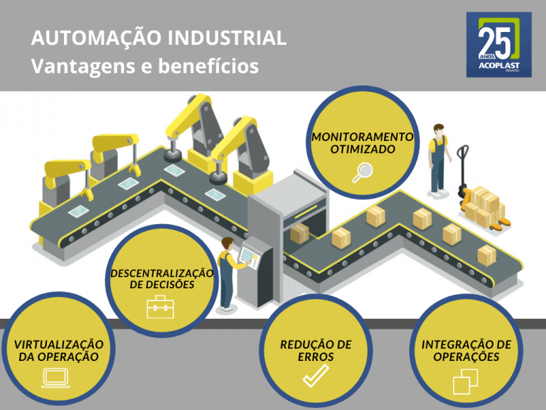
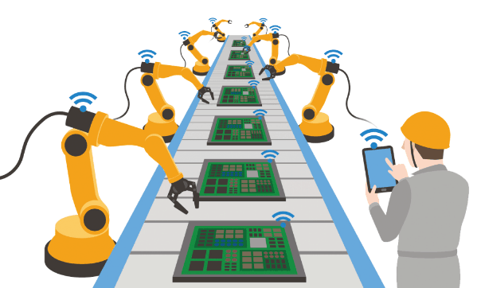

Automação Industrial
É a otimização dos processos industriais de uma operação, através da utilização de numerosas tecnologias de software e hardware.
Entretanto, ela pode acabar substituindo os trabalhos manuais por tarefas mecânicas. No entanto, não quer dizer que as máquinas substituirão os trabalhos das pessoas. O mundo está evoluindo e constantemente, enquanto alguns empregos desaparecem, outros, alinhados à necessidade atual do mercado de trabalho, nascem.
Portanto, um dos seus objetivos é dar mais autonomia para os equipamentos e máquinas industriais, diminuindo possíveis esforços humanos que são gastos na execução de determinadas atividades dentro de uma operação.
 